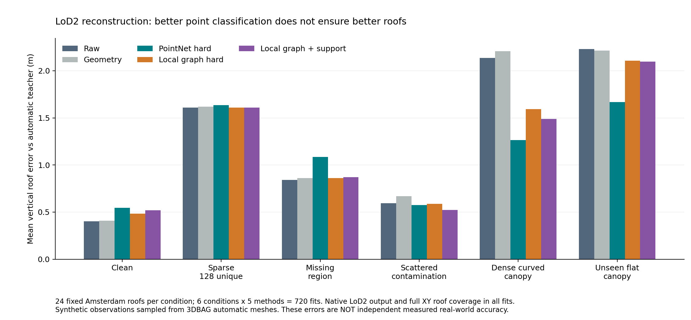
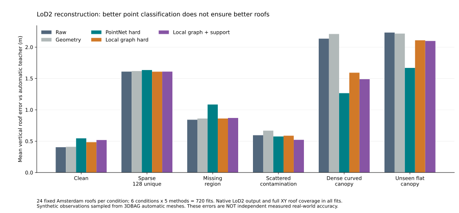

LOD2 / MULTICITY / 2026-10-20
24栋受控模拟屋面＋18栋Boston真实观测
自动3DBAG教师＋合成点云的受控实验；Boston NAIP＋3DEP仅做真实迁移与生成诊断。 各轮输入、地面与评价契约不同，不可跨轮直接比较绝对数值。
打开原正式PDF报告LoD2 多城市初步实验：2026-10-20 已完成：监督 agent 独立审查，H100 上训练两个小型点云网络，并完成受控重建及 Boston 真实观测迁移。 这是一轮机制探索，不是成熟模型或美国大范围精度结论。 1. 数据与划分 3DBAG：Delft+Rotterdam 的500栋训练、160栋空间验证，Amsterdam 的160栋独立城市测试。 3DBAG 自动屋面是教师几何；模拟观测用来控制污染条件，不能冒充真实3DEP。新点网络输入XYZ/离地高度，不含光学。 本轮尚未训练NAIP+3DEP联合融合网络；光学仅使用既有MLP基线。不能据此声称新的多模态方法有效。 从训练前固定的24栋Amsterdam测试屋面，按6种条件×5方法进行720次Roofer重建。 Boston：真实NAIP2014 RGBNIR、2013–14 3DEP；18个实例、47,544个候选点。含13个>=30m²实例、5个小碎片。 17个使用历史模型足迹先验，1个匹配公开OSM足迹；两类均不作为独立足迹精度GT。 Philadelphia高程单位未核实且真实点云未获取成功，未作为本轮米制训练/验证。Building3D受限访问，未使用。 2. 受控屋面重建：宏平均垂直MAE（m），所有方法固定相同Roofer参数 条件 raw geometry pointnet_hard edgeconv_hard edgeconv_guard clean 0.404 0.410 0.546 0.484 0.518 sparse 1.609 1.618 1.634 1.608 1.609 hole 0.842 0.861 1.085 0.861 0.870 scattered_tree 0.595 0.668 0.575 0.587 0.522 dense_canopy 2.135 2.209 1.265 1.592 1.489 unseen_flat_canopy 2.232 2.216 1.668 2.109 2.098 720次均产出nativeLoD2、XY屋面覆盖率1；生成成功不代表屋脊、拓扑和几何精度都正确。 密集弯曲模拟树冠下，PointNet的平均误差2.135→1.265m；但干净屋面0.404→0.546m，存在损伤。 局部图网络对密集模拟树冠拒绝率96.2%，对未见平面树冠仅20.0%。点分类最优没有带来最优屋面重建。 这些是24栋固定测试屋面的均值，不意味着每栋都改善。paired_controlled_comparisons.json提供配对差值和描述性bootstrap区间。 3. Boston真实数据 新网络没有在Boston标注上训练或调阈值；旧光学MLP来自此前ISPRS语义源域。 PointNet删195点、局部图网络删1,955点、光学MLP删0点。只能称干预数量，不能称树木去除准确率。 原始网格投影带退化小洞，导致native引擎整tile拒绝，v1七组全0输出；保留失败结果。 v2对各原始多边形统一做0.01m网格精度归约；相同足迹用于七组，原始点/模型/预测掩码不变。 0.01m是归约网格，不是几何最大偏移保证：退化细缝/洞消除后最大Hausdorff距离7.307m，总对称差面积7.898m²（原面积10883.090m²）。 原始76parts中1个拆成2个，native运行分母为77修复子parts；18个源实例的严格全parts成功分母保持不变。 本轮没有同时期且独立测量的Boston屋面GT，因此不报告真实LoD2误差下降。 raw: 保留47544点；全部parts成功实例5/18；最大part成功14/18。 geometry: 保留44386点；全部parts成功实例4/18；最大part成功14/18。 pointnet_hard: 保留47349点；全部parts成功实例4/18；最大part成功14/18。 edgeconv_hard: 保留45589点；全部parts成功实例5/18；最大part成功14/18。 edgeconv_guard: 保留46867点；全部parts成功实例5/18；最大part成功14/18。 image_hard: 保留47544点；全部parts成功实例5/18；最大part成功14/18。 image_guard: 保留47544点；全部parts成功实例5/18；最大part成功14/18。 4. 当前研究判断 继续探索的依据：DL确实能改变污染条件下的显式屋面重建，但简单删点、源域分类F1和固定几何保护均不足以保证最终质量。 下一轮应在新的开发集上学习屋面支撑与干预置信度，加入干净屋面保持约束，并以重建误差/屋脊结构评价；保持当前测试集冻结。 下一道证据门槛是同时期、坐标核实的真实LiDAR+LoD2独立屋面真值或小规模人工屋面/点标注，不能用历史模型吻合作为替代。 监督是本次任务内的有限独立审查；没有宣称退出会话后持续24小时监控。 主要文件：pilot_results.pdf、controlled_roof_metrics.csv、boston_reconstruction_v2_result.json、supervisor_final_review.json。
六种固定模拟条件，五条处理流程。
1个OSM足迹、17个历史mesh投影先验；有5个微小碎片实例。
77个统一归约后的parts；仅描述native生成，非精度。
受控污染下筛点改变屋面结果；真实Boston没有独立同期屋面GT，生成成功不能代表精度。
MAE与10m限幅损失是不同指标；此表来自24栋自动教师及模拟点云，同条件配对。真实Boston不报告屋面精度。
| 条件 | 方法 | 建筑分母 | LoD2生成 | 平均覆盖 | 屋面MAE (m) | 限幅损失 (m) |
|---|---|---|---|---|---|---|
| clean | raw | 24 | 24 | 1.0000 | 0.4038 | 0.4029 |
| clean | geometry | 24 | 24 | 1.0000 | 0.4101 | 0.4092 |
| clean | pointnet_hard | 24 | 24 | 1.0000 | 0.5457 | 0.5444 |
| clean | edgeconv_hard | 24 | 24 | 1.0000 | 0.4842 | 0.4816 |
| clean | edgeconv_guard | 24 | 24 | 1.0000 | 0.5183 | 0.5157 |
| sparse | raw | 24 | 24 | 1.0000 | 1.6093 | 1.5561 |
| sparse | geometry | 24 | 24 | 1.0000 | 1.6182 | 1.5650 |
| sparse | pointnet_hard | 24 | 24 | 1.0000 | 1.6344 | 1.5812 |
| sparse | edgeconv_hard | 24 | 24 | 1.0000 | 1.6085 | 1.5560 |
| sparse | edgeconv_guard | 24 | 24 | 1.0000 | 1.6095 | 1.5563 |
| hole | raw | 24 | 24 | 1.0000 | 0.8421 | 0.8236 |
| hole | geometry | 24 | 24 | 1.0000 | 0.8612 | 0.8428 |
| hole | pointnet_hard | 24 | 24 | 1.0000 | 1.0848 | 1.0280 |
| hole | edgeconv_hard | 24 | 24 | 1.0000 | 0.8614 | 0.8429 |
| hole | edgeconv_guard | 24 | 24 | 1.0000 | 0.8704 | 0.8520 |
| scattered_tree | raw | 24 | 24 | 1.0000 | 0.5950 | 0.5798 |
| scattered_tree | geometry | 24 | 24 | 1.0000 | 0.6683 | 0.6514 |
| scattered_tree | pointnet_hard | 24 | 24 | 1.0000 | 0.5749 | 0.5674 |
| scattered_tree | edgeconv_hard | 24 | 24 | 1.0000 | 0.5871 | 0.5863 |
| scattered_tree | edgeconv_guard | 24 | 24 | 1.0000 | 0.5218 | 0.5202 |
| dense_canopy | raw | 24 | 24 | 1.0000 | 2.1351 | 2.1038 |
| dense_canopy | geometry | 24 | 24 | 1.0000 | 2.2094 | 2.1746 |
| dense_canopy | pointnet_hard | 24 | 24 | 1.0000 | 1.2654 | 1.2551 |
| dense_canopy | edgeconv_hard | 24 | 24 | 1.0000 | 1.5920 | 1.5413 |
| dense_canopy | edgeconv_guard | 24 | 24 | 1.0000 | 1.4887 | 1.4490 |
| unseen_flat_canopy | raw | 24 | 24 | 1.0000 | 2.2322 | 2.2155 |
| unseen_flat_canopy | geometry | 24 | 24 | 1.0000 | 2.2159 | 2.2034 |
| unseen_flat_canopy | pointnet_hard | 24 | 24 | 1.0000 | 1.6684 | 1.6518 |
| unseen_flat_canopy | edgeconv_hard | 24 | 24 | 1.0000 | 2.1088 | 2.0934 |
| unseen_flat_canopy | edgeconv_guard | 24 | 24 | 1.0000 | 2.0980 | 2.0827 |
点图可打开原尺寸；阶段图保留原阶段语境，正式结论以本轮已审报告为准。


压缩文件为gzip JSON/CSV。科学数值、原始科学哈希和图像数据保持原值；公开复制品只改写本机路径和网页链接。原文件SHA与发布SHA分别列于出版清单，不能把公开复制品称为原字节文件。
| 文件 | 类型 | 大小 |
|---|---|---|
| pilot_results.pdf | aggregate | 24.9 KB |
| controlled_roof_metrics.csv | aggregate | 2.3 KB |
| controlled_reconstruction_result.json | aggregate | 9.7 KB |
| paired_controlled_comparisons.json | aggregate | 9.5 KB |
| boston_inference_result.json | aggregate | 8.1 KB |
| boston_reconstruction_result.json | aggregate | 4.3 KB |
| boston_reconstruction_v2_result.json | aggregate | 5.0 KB |
| boston_reconstruction_v2_topology.json | aggregate | 27.5 KB |
| h100_training_result.json | aggregate | 15.0 KB |
| experiment_summary.txt | result_text | 4.3 KB |
| supervisor_final_review.json | aggregate | 22.9 KB |
| supervisor_final_review_brief.txt | result_text | 2.2 KB |
| controlled_reconstruction_per_building.json | per_building | 21.0 KB |
| boston_reconstruction_per_instance.json | per_building | 1.2 KB |
| boston_reconstruction_v2_per_instance.json | per_building | 1.7 KB |
| audit_summary.json | evidence | 2.2 KB |
| README.txt | source_documentation | 4.8 KB |